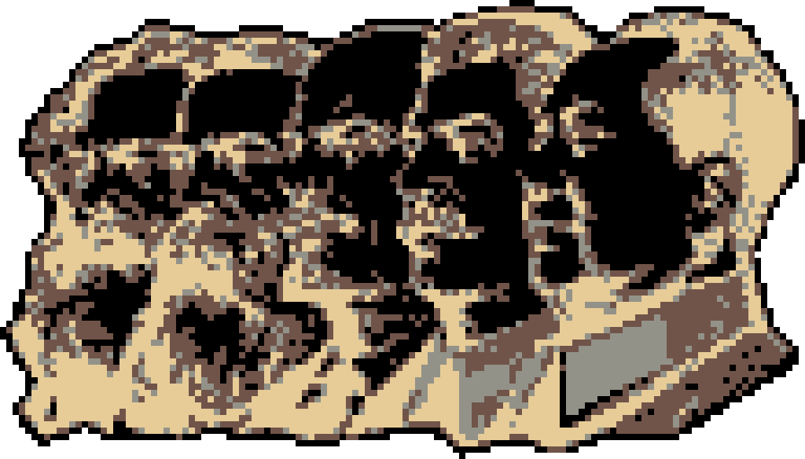

網站 维基百科，自由的百科全书 維基百科網站 網站是指在萬維網上，根據一定的規則，使用HTML等工具製作的用於展示特定內容的相關網頁的集合。簡單地說，網站是一種通訊工具，就像布告欄一樣，人們可以通過網站來發布自己想要公開的資訊，或網站來提供相關的網路服務。人們可以通過網頁瀏覽器來訪問網站，獲取自己需要的資訊或者享受網路服務。 許多公司都擁有自己的網站，他們利用網站來行宣傳、發布產品資訊、招聘等等。隨著網頁製作技術的流行，很多個人也開始製作個人主頁，這些通常是製作者用來自我介紹、展現個性的地方。也有以提供網路資訊為盈利手段的網路公司，通常這些公司的網站上提供人們生活各個方面的資訊如時事新聞、旅遊、娛樂、經濟等。 在萬維網的早期，網站還只能展示單純的文本。經過幾年的發展，圖像、聲音、動畫、影片，甚至3D圖形技術開始在萬維網上流行起來，網站也慢慢地發展成圖文並茂的外觀。通過動態網頁技術，用戶也可以與其他用戶或者網站管理者交流。也有一些網站提供電子郵件服務。 目录 1 歷史 2 概述 3 相關主題 4 参考文献 5 外部連結 歷史 萬維網由英國CERN物理學家蒂姆·伯纳斯-李於1990年創立[1]。1991年8月6日，蒂姆·伯纳斯-李建立世界上第一個網站[2]。1993年4月30日，CERN宣布萬維網對任何人免費開放使用[3]。 概述 網站有許多功能，可用於個人網站、商業網站、政府網站或非營利組織網站。網站可以是個人、企業或其他組織的運作，通常專門用於特定主題或目的。任何網站都可以包含指向任何其他網站的超連結。網站被編寫或轉換為超文件標示語言（HTML），並使用使用者代理的軟體存取。可以從任何大小以電腦和網際網路為基礎的設備（包括桌上型電腦、筆記型電腦、平板電腦和智慧型手機）查看或存取網頁。 網站託管在稱為網頁伺服器的電腦系統上，也稱為HTTP（超文件傳輸協定）伺服器。網頁伺服器也可以指在這些系統上執行的軟體，它們回應來自網站使用者的請求來檢索和傳遞網頁。Apache HTTP Server是目前最常見的網頁伺服器軟體（根據Netcraft統計）， 微軟的IIS也是最常被使用的。一些替代品，如Nginx、Lighttpd、Hiawatha或Cherokee，都是功能相當齊全和輕量化。

Name
Message
Image
Submit